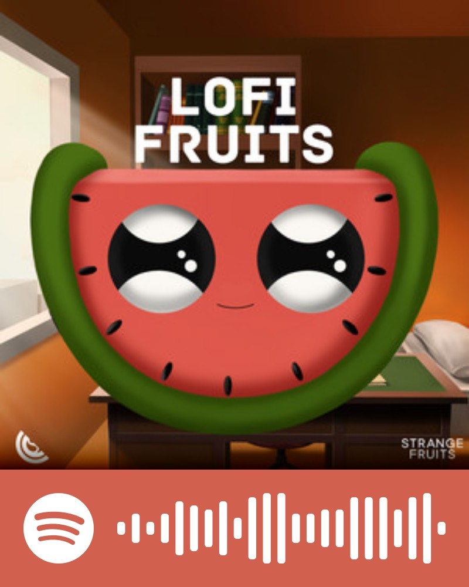

I am currently studying at ESSEC
This website is a summary of what I appreciate in life.
At some point in my life I took a lot of piture and I was very dedicated to improve my photography skills.
Here are two pictures taken at the palace of Versailles and one from a fashion show made at my highschool!
📸
Here you will find the two playlist that rythm my days!
The first one is the one I use to motivate and dance by myself!
The second one is the one I use to focus while studying: No lyrics but still some great and well-kown soundtrack!
Do not hesitate to discover them yourself by cliking on the pictures!
🎸🎶

In my life I have mostly practise two different sports : Modern dance and Boxing.
Those two sports allowed me to spend my energy and release all the pressure.
💃🥊